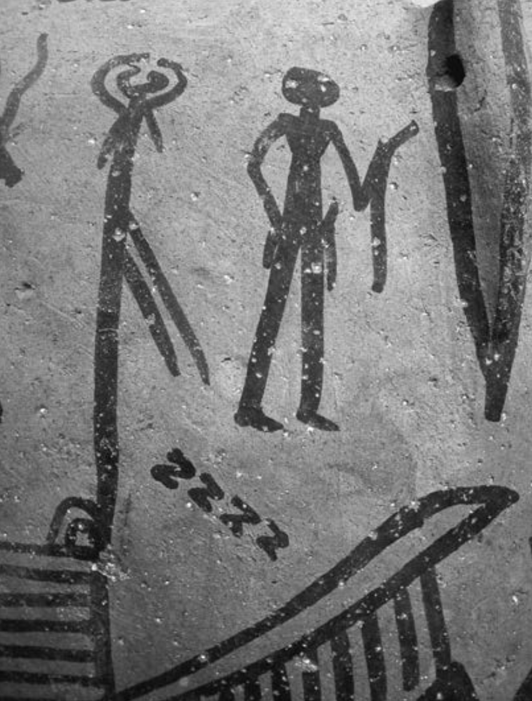
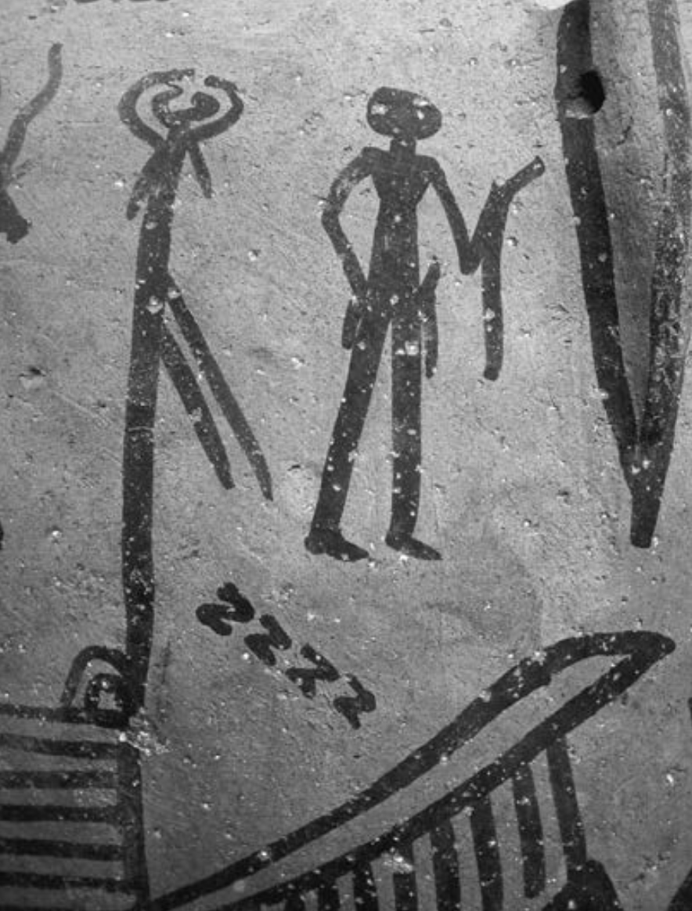

This thesis engages with the human skin, the outer layer of our body, a surface and tool for artistic expression, such as tattoos. It unfolds how tattooing can be a way of self- expression. Our skin is not only a protector against outer harming influences, but it is the largest surface of our body. Just like deep scars, tattoos once incised into this canvas of our bodies are worn for life. Moreover, the aspect of pain and blood, and how this act, in a way gruesome, is of interest, since a person undergoes a conscious decision to have pain inflicted on themselves. Resembling a performance, and in some cases it is one, such as the work of Santiago Sierra, where subjects are part of an artwork. Last but not least I am exploring the symbolism of tattooing, its meaning in certain cultures, and how it has changed and is accessible these days.
The skin, the largest organ of the human body, serves as a protective barrier against external influences. In a broader sense, it safeguards our organs from the outside world. However, when the skin is interrupted or damaged, this barrier is compromised, leaving us more exposed to external influences. Meaning, a small scratch or a puncture into the skin, such as a needle, invites outer influences into our bodies.
Our skin has thus become a canvas for artistic expression, such as tattoos – ink drawings that are etched into the skin’s surface using a needle dipped in special ink. In this thesis I am going to explore the notion of tattoos, the beginnings of tattoos, symbolism and meaning in certain cultures, the taboos that come within, such as in certain religions, as well as tattooing as a practice and what it could mean in a broader sense, for instance, performance art, and how the human skin in a way becomes just another object or a piece of expression for the public. Thus, tattoos can also play a role in self-perception and individualism. People are often conscious of how they are perceived by others and how they perceive others, and tattoos can provide a means for individuals to feel more comfortable in their own bodies while also shape how others perceive them.
I will further highlight an interesting aspect of tattooing, and that is the need to understand the human body and its anatomy to create well-placed artwork that complements and decorates our skin. While everyone has the same anatomy, the ink drawings etched underneath the skin become a part of the human body and its anatomy, so in a way each body has its own ‘pattern’ that can complement the body.
Clearly, creating colored scars on the skin is not pain nor blood free. We take a conscious decision to undergo this ‘procedure’, we willingly allow someone to puncture our skin and sit through the pain and let our skin bleed, and then it takes weeks for the skin to create an extra protective barrier and sometimes even try to fight against this foreign body, with that comes the itching and scabbing. In a way this becomes a bit of a gruesome act, all for a beautiful drawing that will stay underneath the skin for the rest of our lives, the ink aging together with the body.
To start off, let’s investigate the beginning of the practice of tattooing. First tattoos can be found on mummies, one of them being Ötzi, who was discovered in a glazier in September of 1991 by a German couple, Erika and Helmut Simon, (Fig. 1) hiking in the Val Senales glacier.Linder, Courtney. 2021. “The First-Ever Electric Tattooing Machine, Inspired by Thomas Edison, Came about in the 1890s.” Popular Mechanics. February 7, 2021. The cold circumstances preserved his body very well alongside his tattoos. (Fig. 2.,3.) According to Egyptologists, the placement of the tattoos on the Iceman’s body were thought through, respectively, the lines were located on classical acupuncture points, treating rheumatic illness. It appeared, that the Iceman had arthritis in his neck, lower back and right hip, so one could speculate that the locations of the tattooed lines were supposed to treat his condition.Gilbert, Gilbert, and Oguri, The Tattoo History Source Book : An Anthology of Historical Records of Tattooing throughout the World. Page 184.
 Fig.3. : The mummified body of Ötzi the Iceman and placements of his tattoos. © South Tyrol Museum of Archeology/EURAC
Fig.3. : The mummified body of Ötzi the Iceman and placements of his tattoos. © South Tyrol Museum of Archeology/EURAC
Another example of two well-preserved mummies, male and female, coming from Predynastic period in Ancient Egypt (ca. 3900−3100 BCE), obtained by the British Museum in 1899, have tattoos present on them.Deter-Wolf and Krutak, Ancient Ink The Archaeology of Tattooing. female mummy has shapes of the letter S on her shoulder and a line. (Fig. 4.) Meanwhile the male body has a smudged area on his shoulder that appears to be a tattoo. (Fig. 5.) The tattoos, according to sources, come from such things as pottery decorations (Fig. 6.) and the male mummy’s tattoo could represent an animal.Deter-Wolf and Krutak, Ancient Ink The Archaeology of Tattooing.
 Fig.4. : The “S” shapes and a line that appears on the shoulder of the female mummy of Predynastic period in Ancient Egypt. Photographs by Renée Friedman.
Fig.4. : The “S” shapes and a line that appears on the shoulder of the female mummy of Predynastic period in Ancient Egypt. Photographs by Renée Friedman.
 Fig.5. : The tattoo that appears supposedly in a shape of an animal on the shoulder of the male mummy. Photographs by Renée Friedman.

Fig.6. : Illustrations on the pottery that might the inspiration for tattoos on the female mummy as illustrated in Fig.4. Photograph by Renée Friedman.
Fig.5. : The tattoo that appears supposedly in a shape of an animal on the shoulder of the male mummy. Photographs by Renée Friedman.

Fig.6. : Illustrations on the pottery that might the inspiration for tattoos on the female mummy as illustrated in Fig.4. Photograph by Renée Friedman.
The tools used back then were needles made of bone, a clay disk with holes that held the needles alongside with pigments.Gilbert, Gilbert, and Oguri, The Tattoo History Source Book: An Anthology of Historical Records of Tattooing throughout the World. Page 11. (7.) The bone needles were used to puncture the skin and insert the ink underneath the skin, and judging from the preserved mummy Ötzi, the tattooed lines have maintained in a relatively good state. The ink used on Ötzi is not the same ink that tattoo artists use today, researchers suggest that the way the tattoos were made was by a pulverized charcoal being rubbed into the wounds.Linder, Courtney. 2021. “The First-Ever Electric Tattooing Machine, Inspired by Thomas Edison, Came about in the 1890s.” Popular Mechanics. February 7, 2021. One more example of origins of tattoos is another important mummy, Amunet, an Egyptian goddess who represented the cosmic mother who gave all birth to life on earth.Gilbert, Gilbert, and Oguri, The Tattoo History Source Book : An Anthology of Historical Records of Tattooing throughout the World. Page 11. The tattoos on her represent symbols of fertility, as believed by Egyptologists. (Fig. 8.) The tattoos illustrated in the drawings of the mummy are not precise, as the mummy’s body was not preserved as good as Ötzi’s. Yet it is believed that tattoos in Ancient Egypt were mostly on women who were presumably “dancing girls”, although it is also argued against, as most of the tattoos were placed on the stomach and inner thighs, as a protection during pregnancy and childbirth.Magazine, Smithsonian, and Cate Lineberry, Sonja Anderson. “The Worldwide History of Tattoos.” Smithsonian Magazine. January 1, 2007.
The first tattoos found on the mummies consisted of simple lines or dots, strategically placed on their bodies with a meaning.Gilbert, Gilbert, and Oguri, The Tattoo History Source Book : An Anthology of Historical Records of Tattooing throughout the World. Page 11. The Iceman’s tattoos supposedly served as ‘medicine’, while Amunet’s represented fertility. When it comes to the meaning of tattoos, I can assert that the symbolism or meaning of a tattoo has gradually become less important. Today, you can walk into any tattoo shop on the street and decide what you want on spot, or even ask a friend to tattoo something on you.
Yet, the act of tattooing can hold a lot of meaning. Santiago Sierra has held this performative act three times in his artistic practice.Spanish artist known for performance and installation art. Born in 1966. He chose six young Cuban workers and offered them money in exchange for their skin. Desperate for only 30 dollars each, they agreed to get their backs tattooed. This is how 250 cm Long Line on 6 Paid People (Fig. 9.) became another of his most known works. Paying the minimum wage that they would get as migrant laborers; the artist would get thousands of euros from the sales.Eunsong, Kim. “Neoliberal Aesthetics: 250 Line Tattooed on 6 Paid People.” Lateral. 2015. Source The people tattooed remain nameless, that come into the gallery to get tattooed and get paid for their bodies, they sit or stand through the pain of someone tattooing a long, horizontal line across their backs, looking over their shoulders in curiosity, waiting for each of their turns. All this ‘performance’ in the end turns into a photograph, that the wealthier people would see in an art gallery.
With this work Sierra challenges the structures of power in society, as well as political economy. The act of paying someone to give up their bodies for a long line across their backs, just for a bit of money because they have no other way of earning money that day, where later their bodies will become an ‘art piece’ that will be sold to the wealthier people. Sierra says: “The tattoo is not the problem. The problem is the existence of social conditions that allow me to make this work.”“Santiago Sierra - the Strangeness of Reality.” Delphian Gallery. November 1, 2018. SOURCE This 250 cm long tattooed line running across 6 people, uniting them in this moment and for the rest of their lives. Another work of Sierra involving tattoos and lines is 160 cm Line tattooed on 4 people (Fig. 10.), where, again, in exchange for payment they would agree to have their backs tattooed, this time it would be for a shot of heroin.
I want to draw attention to the symbolism of a line here. If we look at Ötzi’s tattoos, where small, vertical group of lines were placed around his body and supposedly were meant to treat his illness, Santiago Sierra uses the idea of a continuous line (250 cm Long Line on 6 Paid People) as perhaps a way to ‘connect’ the people it was tattooed on. Yet the 160 cm line had interruptions between the bodies. These two works are different from each other but have the same pattern – pay, tattoo, showcase. While Ötzi’s tattoos were purely serving a medical aspect or as “medicine”, Sierra’s tattooed lines on human bodies were left as a mark for them that they will always associate with being paid, tattooed, filmed, and later shown to a wider audience.

A line, a dot or a combination of both can also hold a lot of meaning in other cultures, such as for the Inuit population. Tattooing in Alaska, according to a found carved archeological human figurine, dates back to 3500 years ago.Gilbert, Gilbert, and Oguri, The Tattoo History Source Book : An Anthology of Historical Records of Tattooing throughout the World. Page 173. Tattooing was a practice that was held for a long period of time in the Inuit culture. One of the first techniques of tattooing was skin-stitching, a technique where one uses a needle with a thread, that is dipped in special mixture that would serve as ink. Skin-stitching literally stands for “stitching through skin”, and the dipped thread would leave a mark underneath the epidermis.
In the Inuit population, women more than men would get tattoos at specific times of their lives, and with that marking an event. For instance, lines tattooed on a woman’s chin would represent that the woman has reached puberty, a signal to men. (Fig. 11.) Anthropologist Sergei Bogojavlensky says: “It was believed that a girl who smiled and laughed too much would cause the lines to spread and get thick. A girl with a full set of lines on the chin, all of them thin, was considered to be a good prospect as a wife, for she was clearly serious and hard working.”Gilbert, Gilbert, and Oguri, The Tattoo History Source Book : An Anthology of Historical Records of Tattooing throughout the World. Page 179. Men, on St. Lawrence Island, were mostly tattooed for the first time when they had killed an animal, such as a seal or a polar bear. Their first tattoos consisted of dots around the area of elbows, wrists, knees, ankles, hips and waist.Gilbert, Gilbert, and Oguri, The Tattoo History Source Book : An Anthology of Historical Records of Tattooing throughout the World. Page 176.
An Inuit woman’s tattoos hold a lot of significance, starting from adolescence. Either a woman has matured, is pregnant, or has become a mother, even if a girl’s father has hunted an animal, it would be inscribed on her skin. A woman’s skin became a body map and a history. When the colonizers and missionaries arrived, they imposed a ban on Inuit tattooing and religious beliefs. This was a common practice during missionary efforts, where other belief systems, especially indigenous ones, were devalued in order to enforce the religious goals of the colonizers. These acts of course are to be seen as extremely transgressive and controversial until today. Hence tattooing disappeared for a moment back in 18th century, until it was revived and was reclaimed again: Today, tattooing is a very important part of the Inuit people.
Tattooing in itself becomes like a ritual, a ceremony. It is a celebration of the individual being tattooed, for instance in Inuit, a girl becoming a woman or a man failing to hunt down an animal, these moments of their life are inscribed onto their skins. In some other places in the world, like in Thailand, a Sak (Tap, To tattoo) Yant (Yantra) tattoo is believed to protect the wearer from bad luck, harm, and ward off evil spirits.“What is a Sak Yant Tattoo? History, Description and Photos” Sak Yant Chiang Mai. September 17, 2020. SOURCE It is believed to trace back at least 2000 years ago. A Sak Yant is tattooed by a professional monk, who has had years of practice and training. What is intriquing about a Sak Yant tattoo is that it is a very organised process of tattooing – to get a Sak Yant tattoo, you give an offering to honor the master and the tradition, which consists of a few flowers, incense and cigarettes,“What is a Sak Yant Tattoo? History, Description and Photos” Sak Yant Chiang Mai. September 17, 2020. SOURCEthen the master will start tattooing the chosen design, while reciting special prayers associated with the design, and after the tattoo is done, the master will do a magical blessing, finally, the wearer of the tattoo gives a donation, which serves as a payment.
When it comes to Sak Yant tattoo designs, the most popular ones (see Fig. 12., from left to right) are Paed Tidt (8 Direction), Hah Taew (Five Line) and Gao Yord (Buddha Peaks). These designs hold blessings about luck, fortune, and things that most of the people would want to be protected against.“What is a Sak Yant Tattoo? History, Description and Photos” Sak Yant Chiang Mai. September 17, 2020. SOURCE Nowadays, when people decide to get a Sak Yant tattoo, or any tattoo design that has been practiced for years in specific cultures, like Inuit, the problem encountered that one perhaps doesn’t entirely realise, is cultural appropriation. There is shared frustration among the elderly professionals, who claim that people are getting tattoos today that somehow relate to the Inuit culture, without taking into account the history and spiritual meaning of the design. The same can be said about Sak Yant, for instance, a tourist traveling in Thailand who decided to get a tattoo at a professional studio, finding a design on the internet without understanding the meaning of it, and asking the tattoo artist to make a tattoo of it. This act can become offensive to the actual masters of Sak Yant, since people who get these designs tattooed often are ignorant to the historical meaning of the practice.
The ritual behind a Sak Yant tattoo is crucial, and if a tattoo artist, who is not specialised in this, makes a Sak Yant tattoo is in fact culturally appropriating Sak Yant. It is also important to note that the designs found on the internet are most definitely not original, and it also takes away the magic of the tattoo.
Not only the certain tattoo techniques used decades ago are time consuming, they are also more painful and more ‘brutal’. As mentioned earlier, the technique used in Inuit tattooing is ‘skin-stitching’(Fig. 13.), which doesn’t sound too appealing. The line appears ‘stitched’, so only the part where the thread passes through the very top layer of the skin, the ink stays. Though the process is slow, it seems delicate, since the thread needs to pass all the way through the skin, and dipped in ink every time a new line has to be made.
Unlike skin-stitching, the technique used to make a Sak Yant tattoo looks and feels more brutal and painful. The long steel tool called Khem (Fig. 14.), that looks more similar to a tattoo needle used in traditional tattooing today, is used by repeatedly poking the skin. The look of the tool in itself might cause shivers run down one’s spine. When the skin is being repeatedly punctured with a needle that holds ink, it is undoubtedly a painful process. It is like accidentally cutting oneself with a knife while cooking, or a cat leaving a scratch on the hand during a playful encounter. Although a tattoo is not an accidental scar but a conscious decision to wound the skin, one needs to sit through the pain, either it takes a few minutes or even hours. If we look at the ‘tattoo pain chart’(Fig. 15.), there are areas that hurt the least and areas that hurt the most.
So far I have only touched upon tattooing as practice on a surface level – the tattoos as symbolism and what they mean, differences between cultures and the tools and techniques used. Furthermore, I want to start ‘dissecting’ the practice. It is important to know the anatomy of the human skin in order to give or receive a tattoo. If we look at the illustrated drawings of the human skin, it is mainly illustrated and understood to consist of three layers, the epidermis, dermis, and subcotaneous tissue (fat).(Fig. 16.) The epidermis alone consists of ever more layers, usually 4 to 5 layers, that each have a role.(Fig. 17.) When it comes to tattooing and injecting the ink into the skin, the needle is not supposed to go deeper than the very surface of the dermis, so technically, the needle has to penetrate 5 layers of the dermis, which sounds like a lot, but it goes only 1-2 millimeters deep.Only, By Association. “How Deep Does a Tattoo Needle Go?” Stories and Ink, January 26, 2023. SOURCE
Jeanette Winterson describes the human skin from a poetic point of view. Written on The Body is a novel about the pain of loving someone who is going to die, and the grief that comes with it. In the story, she falls in love with a married woman named Louise, who falls fatally ill only to eventually pass away while Winterson has to deal with grief. She ‘dissects’ the body, starting from The Cells, Tissues, Systems and Cavities of the Body, then The Skin, and The Skeleton and finally The Special Senses. In a way this book becomes a way to deal with grief, as well as memories and acceptance. After someone you love so dearly passes away, your life will never be the same as it used to be before. In the first chapter she describes how the illness takes over Louise’s whole system, how her body slowly starts to weaken, and how Jeanette wishes that she could protect her. Jeanette Winterson speaks of our loved ones as actually dead cells that we touch:
“Odd to think that the piece of you I know best is already dead. The cells on the surface of your skin are thin and flat without blood vessels or nerve endings. Dead cells, thickest on the palms of your hands and the soles of your feet. Your sepulchral body, offered to me in the past tense, protects your soft centre from the intrusions of the outside world. I am one such intrusion, stroking you with necrophiliac obsession, loving the shell laid out before me.”Winterson Jeanette. 2014. Written on the Body.
We cannot see our dead skin cells nor them changing constantly by just looking at our bare skin. Yet we can see that happen when the skin barrier is broken by scarring, for instance, when the tattoo is made and undergoes the healing process. The very top layer of the epidermis ‘sheds’, and after a week or two, the tattoo is fully healed. As illustrated in Fig. 18., before healing the ink still stays in the top layer, and after the skin sheds and heals, the ink remains in the dermis. If the needle doesn’t go deep enough in the dermis, there is a chance for the tattoo to fade away completely, as the dead skin cells regenerate, but if the contrary is done and the ink is pushed too deep into the skin, so in the layer of fat, a so called ‘blow-out’ can happen, meaning that the ink will expand and create a shadow-like effect around the lines. (Fig. 19.)
 Fig.19. : An example of a blown-out tattoo.
Fig.19. : An example of a blown-out tattoo.
During the act of the tattooing in itself, it becomes an intimate kind of process that is the relationship between the needle and the skin, where skin in that moment becomes a ‘material’. Just like Santiago Sierra, as mentioned earlier in my thesis, applies his work and uses people’s bodies to showcase his work and deliver his message, in which the skin and ink become a tool or an ingredient for a final piece, the performance artist Marina Abramović uses her body in a similar sense while performing. Abramović was raised in former Yugoslavia and in her book Walk Through Walls she describes her difficult childhood, and how the abuse has affected her life and how it reflects in her work. I wish to draw attention to the very beginning of this book, in which Abramović states:
“One of my biggest fears has always been of blood – my own blood. When I was small, when my mother and her sister slapped me, I got blue bruises all over; my nose would bleed constantly. Then, when I lost my first baby tooth, the bleeding didn’t stop for three months. I had to sleep sitting up in bed so I wouldn’t choke. Finally my parents took me to doctors to see what was wrong with me, and they found out I had a blood disorder – at first they thought it was leukemia. My mother and father put me in the hospital; I was there for almost a year. I was six. This was the happiest time of my childhood.”Abramovic, Walk through Walls: A Memoir. Page 10.
The artist shares that one of her biggest fears has always been of blood, yet later on in her performances she works around with blood, or rather with pushing her body’s limits. I specifically want to mention her work Thomas Lips, a performance first time held in 1975 that involves the artist eating 1 kilo of honey, drinking 1 liter of wine, breaking the wine glass with her hand, and later whipping herself, and cutting a five-pointed star on her stomach with a razor blade.“Lips of Thomas (1975/1993) 1993.” LIMA preserves, distributes and researches media art. SOURCE (Fig. 20.) The artist really pushes her body’s boundaries, where the act becomes quite masochistic. By pushing her body to these limits the artist also challenges the relationship between herself and the audience, she tests their patience in regards to the performance. Abramović states in one of the videos, where she’s seen carving a star on her stomach again in 1993: “Pain is not the issue, the body is the tool and material.”“Marina Abramović Cutting Her Stomach with a Razor Blade in Smithsonian Video.” November 5, 2016. SOURCE Stating literally that the body (skin) becomes a tool. The performance is registered to be held 4 times, so Abramović was cutting her stomach with a razor blade multiple times, challanging her body and pain levels. Perhaps over time and having done this again and again, just like with tattooing, scarification becomes less painful because the body has been already acquainted with the specific pain.
 Fig.20. : Lips of Thomas. Photograph, 1975 (published 1994). © Marina Abramović, courtesy of Sean Kelly Gallery/(ARS), New York.
Fig.20. : Lips of Thomas. Photograph, 1975 (published 1994). © Marina Abramović, courtesy of Sean Kelly Gallery/(ARS), New York.
By doing this, Abramović is inviting outer influences into her body. Is it either the audience and it’s reactions towards the performance, or quite literally making way for such things as bacteria. The tool used – razor, is an outer influence in itself. It is used to break the skin barrier between the inner body and the outside world, yet the one that is doing this is the artist herself, the tool is held by her own hand, controlling the pace and depth of the cut. She is the one in control. Whilst from the perspective of tattooing, not only the skin barrier is broken by a puncture of a needle, the outer influence that is literally invited and pushed in the dermis is ink.
While tattooing can be a means for expression and body décor and the opportunity to feel more confident with oneself, not only it decorates the body, it also affects our system on a toxic level. Once the ink enters the dermis, our cells start fighting against this foreign body immediately, and continue to do so for the rest of our lives.Kurzgesagt – In A Nutshell. “Your Tattoo Is inside Your Immune System. Literally.” December 12, 2023. SOURCE
While our body is always there for us to fight against something that was not welcome to be injected into the skin in the first place but we willingly let that happen, for some, tattoos were ‘forced upon’. I want to draw attention to a controversial take upon tattooing that refers to the concentration camps – before and during the second World War – located in German-occupied Poland. There tattoos were carried out on the prisoners’ bodies in order to number them in the Auschwitz complex, that consisted of Auschwitz I (Main Camp), Auschwitz II (Auschwitz-Birkenau), and Auschwitz III (Monowitz and the subcamps).United States Holocaust Memorial Museum. December 9, 2019. “Tattoos and Numbers: The System of Identifying Prisoners at Auschwitz.” Ushmm.org. SOURCE Tattooing first started in 1941 on Soviet prisoners of war where they were marked as a form of identification, metal stamps with numbers (Fig. 21.) were used to tattoo the left side of their chest. In 1942 tattooing expanded onto all incoming Jewish prisoners. Later on the placement of the tattoos was on their lower left arm.United States Holocaust Memorial Museum. December 9, 2019. “Tattoos and Numbers: The System of Identifying Prisoners at Auschwitz.” Ushmm.org. SOURCE(Fig. 22.) These chilling events of history make one wonder how tattoooing has a very dark counterside and how it had become a tool in assisting the serial mass killing of Jewish people, LGBTQ+ as well as politically diverse opponents of the Nazi regime such as intellectuals and thinkers of other parties that refused to join the Nationalsozialisten and their party.
Referencing the Arctic (Inuit) once more, when it comes to death and tattoos, there is also a ritualistic aspect to it. Specifically in the St. Lawrence Island, the so called ‘funerary tattoos’ consisted of small dots placed on shoulders, hips, elbows, wrists, knees, ankles, neck, and waist joints, using the skin-stitching technique and ink that consisted of seal oil, urine, and lampblack.Gilbert, Gilbert, and Oguri, The Tattoo History Source Book : An Anthology of Historical Records of Tattooing throughout the World. Page 175. The dots were tattooed on these specific spots, mainly on pallbearers, because it was believed that the evil spirits could enter the human body through these points.
For some skin is a material and an object quite literally, the Japanese physician and pathologist Fukushi Masaichi (1878-1956) collected tattooed human skins once the person has died, by paying the person to donate their skin. (Fig. 23.) Being keen on medicine from early on in his life Fukushi got interested in tattoo bodysuits in 1907 when he met various tattoo artists and began his research into tattooing. “The Bodysuit Collector: Doctor Fukushi Masaichi and the Art of Preserving Tattooed Skin.” Yamato Magazine. September 14, 2020. SOURCE He managed to collect over 2000 tattooed human skins and documented 3000 photographs but lost a huge part of his collection due to air raid bombings in 1945.
Today, you can even choose to donate your own tattoos after death, for instance, as a chance for your loved ones to have a ‘piece of you’ as a memorial after your death, or for your tattoo to become a property of the foundation and a source of inspiration for others. (Fig. 24.) Peter van der Helm says: “Everyone spends their lives in search of immortality, and this is a simple way to get a piece of it,” he launched Foundation for the Art and Science of Tattooing, based in Amsterdam.Deter-Wolf and Krutak, Ancient Ink The Archaeology of Tattooing. Page 130.
 Fig.24. : Tattoo preserved by the Foundation for the Art and Science of Tattooing (Amsterdam). © Peter van der Helm.
Fig.24. : Tattoo preserved by the Foundation for the Art and Science of Tattooing (Amsterdam). © Peter van der Helm.
I think that it’s interesting that we strive for getting tattoos our whole life, and the body becomes a means for expression, décor and canvas, but once a person dies, there is an opportunity for that individual to either bear the tattoos with them in their grave, or donate them where the skin with the drawing becomes a piece of artwork, a souvenir, a thing to frame and put on the wall for display to others. There are questions of when does the skin become just another material and object, the human body becomes a tool for expression, and controversial opinions around these subjects. At the end of your life the skin is still taken away from the body (if preserved) and put up for others’ eyes.
Concluding, tattooing has been around for centuries, the very first evidence being the famous Ötzi, a mummy whose body has been well preserved thanks to being frozen in a glacier. I talked about the symbolism of the lines that were placed on the specific areas on the mummy’s body and what it meant, further on I described what a continuous tattooed line means in the performance art of Santiago Sierra, making a connection between these two rather different concepts – tattooed lines serving as medicine and a continuous line on multiple skins serving as a political message.
Tattooing as a practice has evolved throughout different cultures, where in each of these cultures it holds their own significant meaning. It is also important to note that how these meanings can be misinterpreted with decades, having a chance to unfortunately culturally appropriate the tattoos.
My main point of this thesis is about how the skin becomes a material, a tool for expression with the help of tattoos. Breaking the skin barrier with a needle that holds ink it also makes way for outer influences into the body, for instance ink itself, that is a toxic liquid and the body fights against it our whole lives. The skin, that is only one for the whole of our lives, is just another material and object, a canvas with etched ink drawings in the dermis for the whole of our lives, up until one’s death, where after death the skin can quite literally become an object such as in tattoo preservation.
Bibliography
Abramovic, Marina. Walk through Walls: A Memoir.
Deter-Wolf and Krutak. Ancient Ink The Archaeology of Tattooing.
Gilbert, Gilbert, andOguri. The Tattoo History Source Book: An Anthology of Historical Records of Tattooing throughout the World.
Winterson, Jeanette. Written on the Body.
Eunsong, Kim. “Neoliberal Aesthetics: 250 Line Tattooed on 6 Paid People.” Lateral. 2015. SOURCE
Linder, Courtney. 2021.“The First-Ever Electric Tattooing Machine, Inspired by Thomas Edison, Came about in the 1890s.” Popular Mechanics. February 7, 2021. SOURCE
Magazine, Smithsonian, andCate Lineberry, Sonja Anderson.“TheWorldwide History of Tattoos.” Smithsonian Magazine. January 1, 2007. SOURCE
“Marina Abramović Cutting Her Stomach with a Razor Blade in Smithsonian Video.” November 5, 2016. SOURCE
“Lips of Thomas (1975/1993) 1993. ”LIMA preserves,distributesand researches media art. SOURCE
“Santiago Sierra - the Strangeness of Reality.” Delphian Gallery. November 1, 2018. SOURCE
“Tattoos and Numbers: The System of Identifying Prisoners at Auschwitz.” United States Holocaust Memorial Museum. December 9, 2019. SOURCE
“The Bodysuit Collector: Doctor Fukushi Masaichi and the Art of Preserving Tattooed Skin.” Yamato Magazine. September 14, 2020. SOURCE
“What is a Sak Yant Tattoo? History, Description and Photos” Sak Yant Chiang Mai. September 17, 2020. SOURCE
“Your Tattoo Is inside Your Immune System. Literally.” Kurzgesagt – In A Nutshell. December 12, 2023. SOURCE
Only, By Association. “How Deep Does a Tattoo Needle Go?” Stories and Ink. January 26, 2023. SOURCE